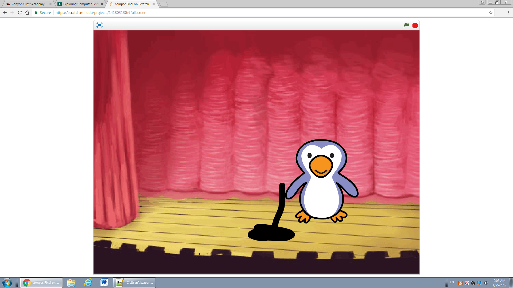

Final Project Content
Computer Science Final Project
My final project was about a space pirate that got himself and
his crew stuck into a space war, and had to get away. He ended
up getting shoulder charged away by one of the captains, and
got beaten up by the captains twins.
